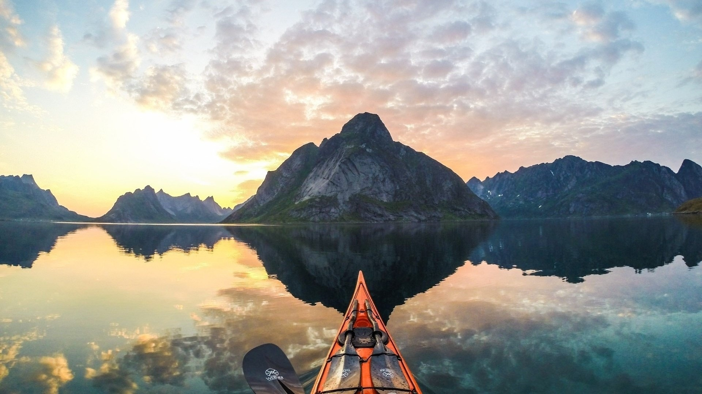
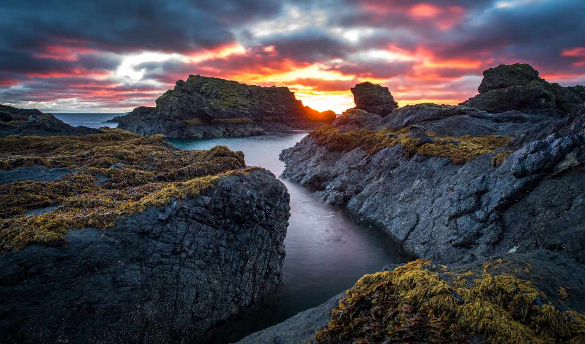
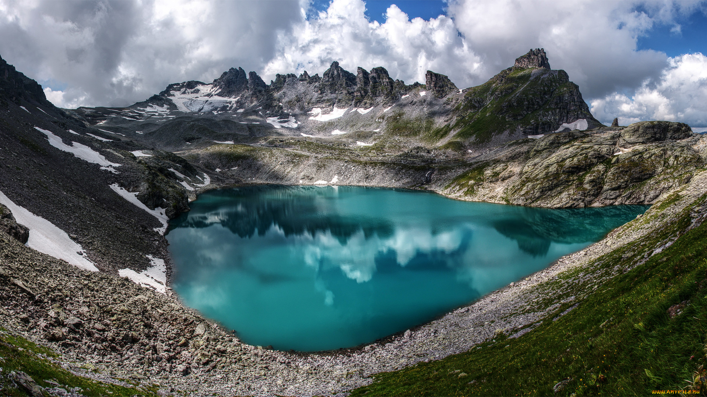
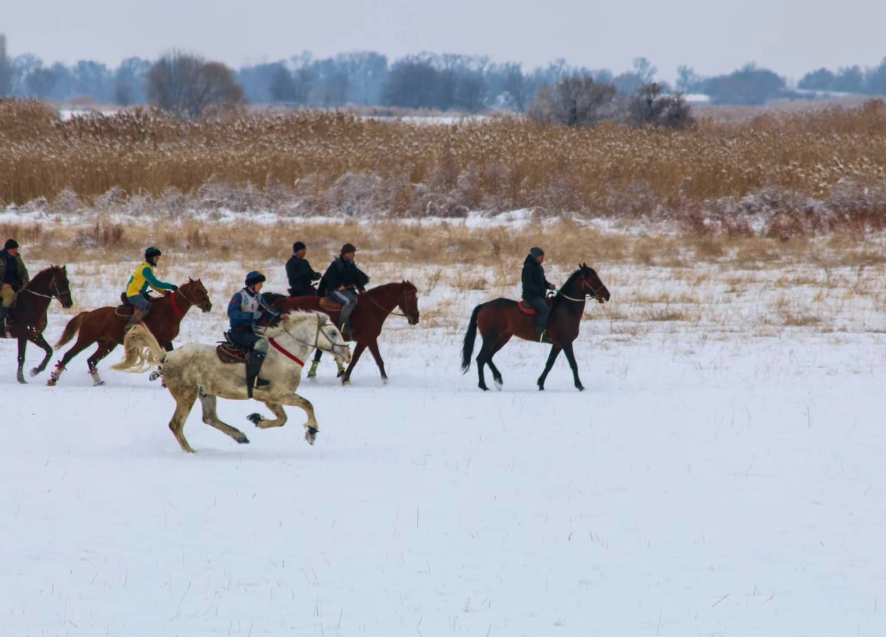
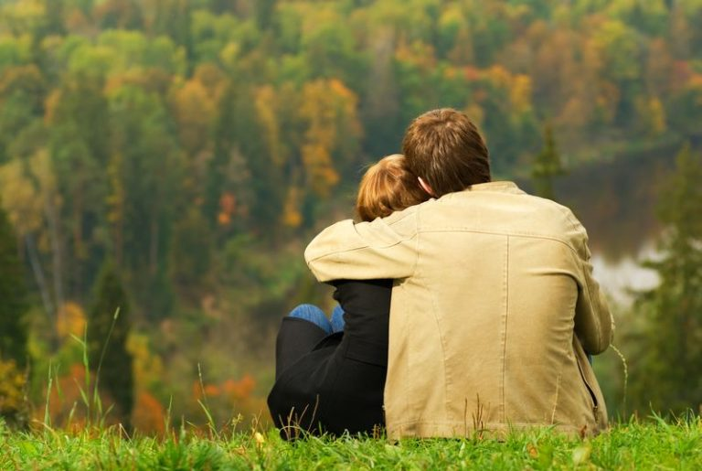
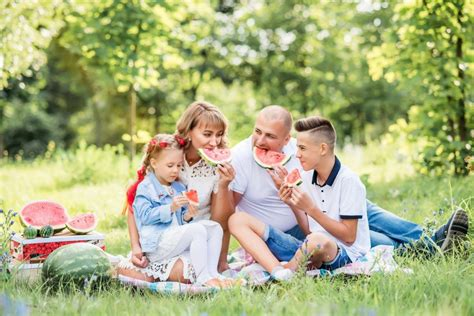
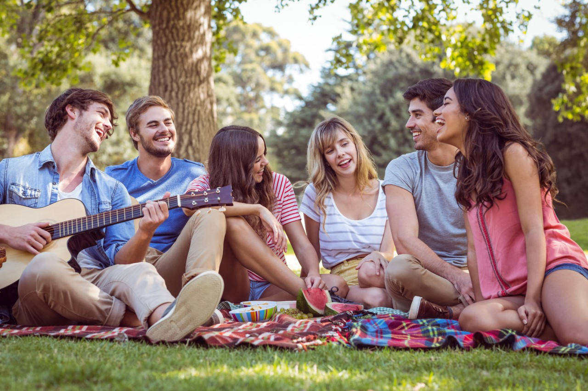

1-места
Вы побываете в необыкновенных местах,
недоступных для обычных туристов

Приключение
Займетесь экстремальными видами спорта в условиях дикой природы или полюбуетесь невероятными пейзажами, сделаете потрясающие фото и проведете вечер у костра

Отдохнете среди гор Киргизского хребта возле
Природа
Отдохнете среди гор Киргизского хребта возле
нетронутых озер и водопадов в тишине ущелий и национальных парков

Отдых
Наберетесь сил, обретете внутреннюю гармонию и покой, отвлечетесь от работы и бытовых проблем

Впечатления
Окунетесь в атмосферу приключений, получите новые впечатления и воспоминания на всю жизнь
Выбирайте свободу и эксклюзивный отдых
2-комфорт
Вы отправитесь в путешествие
на кемпере премиум-класса
6 спальных мест
— чтобы вы могли отдыхать всей семьей или с компанией друзей
Полностью оборудованная кухня
с плитой, холодильником и
посудой — готовьте любимые блюда или заказывайте еду к
месту стоянки
Удобные кресла и большой стол
— обедайте все вместе или
играйте в настольные игры во время путешествия
Отопление и
кондиционер
вам будет комфортно внутри автодома независимо от времени года

Большие окна
из которых вы сможете наслаждаться живописными пейзажами
Объем бака
для запасов пресной воды—120 л, резервуар для сточных вод—95 л
3—путешествие
Максимальный комфорт —
пакет «КемперТур»
Что входит в стоимость:
-
Аренда кемпера Benimar Mileo 224
со всеми опциями -
Бензин на все время путешествия
при условии передвижения по заранее
утвержденному маршруту -
Наборы питания на 6 чел для
самостоятельного приготовления пищи
во время поездки -
Места на оборудованных стоянках
в шаговой доступности от природных
и культурных достопримечательностей
-
Техническая поддержка и обслуживание
автодома во время стоянки на площадке
КемперТур -
Уборка автодома, дополнительные
комплекты постельного белья и полотенец -
Разработка индивидуальной
программы: маршрут, особенности,
карты, навигация, стоянки -
Круглосуточный онлайн-канал для
связи с web-консьержем и решения
вопросов в пути
4—отзывы
Отзывы путешественников
Алина
Мы с мужем недавно вернулись из путешествия по Киргизии на автодоме. Хотелось приключений, но я немного боялась — вдвоем, в горах в незнакомой стране… Первые два дня ночевали на оборудованных стоянках для кемперов. Но на третий день решили остановиться на потрясающей поляне с видом на горы. После полуночи вдруг в кемпере погас свет… Почувствовала себя как в триллере. Думали, что ждать помощи придется до утра. Но муж связался с web-консьержем и все исправили за пару минут. Оказывается, мы настроили что-то не так в бортовом компьютере. Ребята из Кемперов потом сами с нами связывались, уточняли все ли в порядке. Большое спасибо! За время путешествия мы погрузились в атмосферу природы, при этом в автодоме у нас было все для комфорта: кухня, душ, туалет, все столовые и постельные принадлежности. А главное, я чувствовала себя в безопасности. Не хуже чем «все включено», только вокруг дикая природа. Это незабываемый опыт
Артем
Я давно мечтал поехать в путешествие в доме на колесах. Часто видел это в кино и загорелся. Даже думал купить жилой трейлер. Но в кино показывают, как для таких путешественников оборудуют стоянки, можно легко заправить воду, купить продукты. У нас я такого не видел. С нашими расстояниями надо к трейлеру еще и цистерну на водовозке прицеплять… Если учитывать, что я с девушкой и душ нужен не один раз в день. Все равно искал варианты и наткнулся на сайт «Кемперов». Не ожидал, что все, что ищу, найду в Киргизии! Уговорил свою девушку поехать и за два дня мы собрали компанию друзей. Хотя они не особо верили, что все будет на таком уровне. В общем, мы поехали. Путешествие оказалось просто идеальным. Было все, включая посуду и мелкую бытовую технику. Девчонки готовили как дома. На стоянках заказывали национальные блюда. Каждое утро мы просыпались в новом месте с живописными видами. На стоянках было все, что нужно для цивилизации. В общем, команда Кемперов удивила! А от Киргизии остались самые яркие воспоминания, надеюсь вернуться сюда еще
Евгения
Мы с семьей уже не первый раз путешествуем в автодоме. Детям 7 и 9 лет. Ездили на море, на Волгу. В этот раз решили поехать в Киргизию. Во-первых, родители рассказывали, как были там и я много читала о природе этой страны. А во-вторых, все же близкая нам страна и люди, бывший Союз. Раньше из-за детей запасались всем чем можно, чтобы им было чем заняться. Потому что долго любоваться природой, как мы с мужем, они не очень-то хотят… Мы даже велосипеды с собой брали. В «Кемперах» узнали, что можно взять в аренду на стоянках велосипеды и самокаты. Брали гидроциклы, катались с детьми. Потом не надо все это обратно упаковывать, загружать. На каждой стоянке что-то новое придумывали. По вечерам мы с мужем у костра, а малышня мультики по телевизору смотрели в кемпере. А потом все равно к нам выходили и в шезлонгах засыпали под пледами от потрясающе свежего воздуха и впечатлений. В общем мы влюбились в Киргизию. А кемпер стал нашим вторым домом. Не всё еще объехали, поэтому обязательно снова поедем уже по другому маршрут
5—программы
Самые популярные программы
Уникальное путешествие на автодоме по
Для пар и молодоженов
Уникальное путешествие на автодоме по
Киргизии, который позволит совместить
романтику и приключения. Вы посетите
каньоны, озера и горные хребты, насладитесь местной кухней, встретите незабываемые
восходы солнца и поужинаете в романтической обстановке на закате.
Идеальное развлечение для малышей и возможность насладиться красотой
Для семей с детьми
Идеальное развлечение для малышей и возможность насладиться красотой
природы для взрослых. Программа поездки
включает посещение заповедников, прогулки по горам и озерам. Автодом позволит вам легко перемещаться по всей стране и не зависеть от расписания транспорта. Ваши дети будут в восторге от путешествия.
